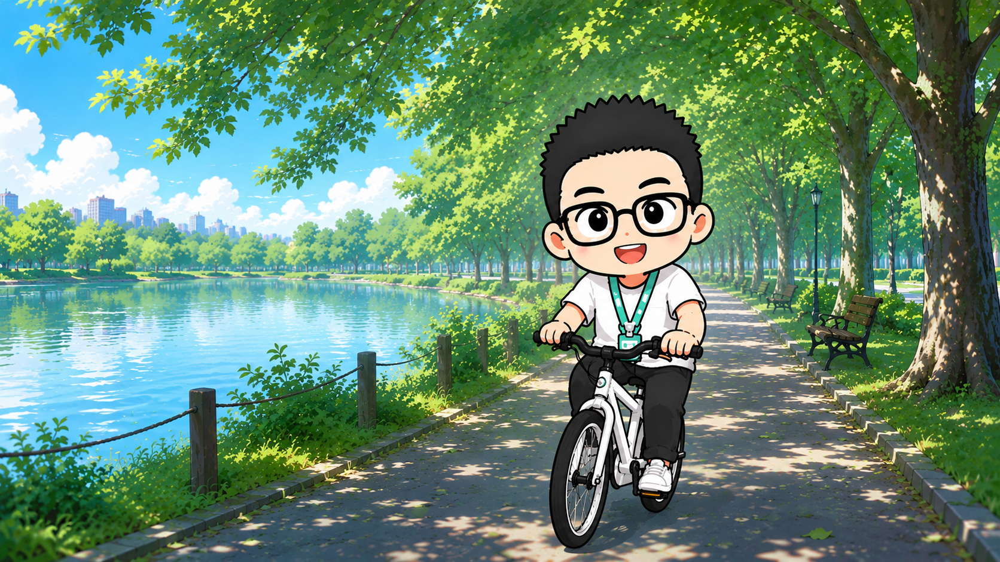
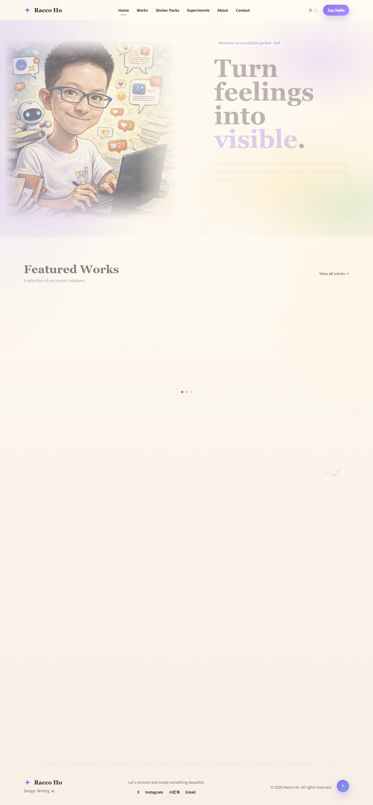

Richard Daily Life
A little character for all the ordinary, embarrassing, funny, and soft parts of daily life.
View project ↗Racco Ho
A small, imperfect collection of pictures, objects, stickers, words, and other things I felt like keeping.
Enter the archive ↓
Selected things I've made.
A little character for all the ordinary, embarrassing, funny, and soft parts of daily life.
View project ↗
Versions of me, imagined rather than documented.
Open archive ↗Maybe a personal website doesn't need to explain what kind of person you are.
Maybe the things you leave behind do that for you.Not everything needs to become a project.
A small project I kept making
Two sticker packs about the tiny theatre of ordinary life.


Not a résumé. Just enough context.

I'm Racco Ho, a person who keeps making little things.
I like visual work, music, photographs, strange ideas, stationery, clothes, cities, museums, and the feeling of finding a detail nobody else stopped to notice.
This site is less a portfolio than a record of what I happen to be making or thinking about at a particular moment.
For projects, collaborations, postcards, or just a good reason to talk.